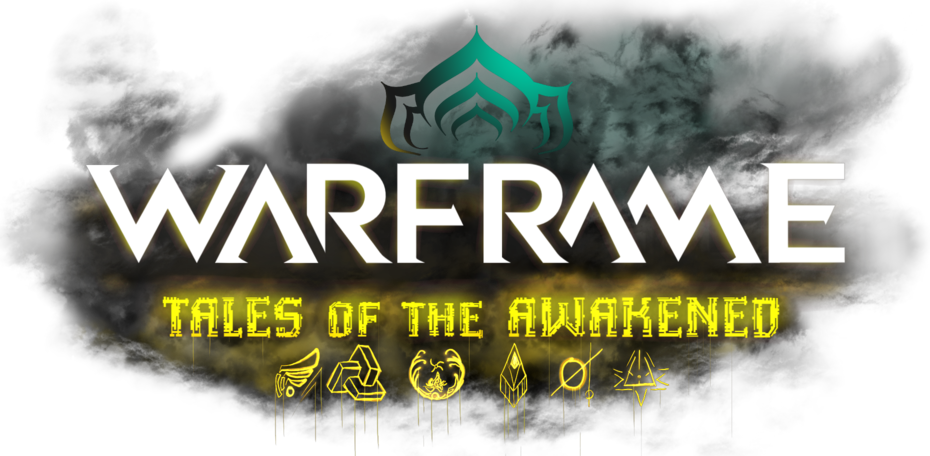

Archives of the Awakened
Hello, and welcome to the Tales of the Awakened RP archives. These stories are all works of fan fiction using the universe of the video game Warframe, which is owned and produced by Digital Extremes. We do not claim any ownership over the universe of Warframe. If you want to learn about our history and who we are, click here.
Personal RPs
Project: Telos - Leveret, Kapak, Svytoj, Chegar, Etaler, Efahz, Adrova
The Fortuna Heist - Kapak, Sonera, Frez
Return of the Dead and Forgotten - Vuko, Disruptis, EloHim, Deco
Madam Bourgoar's Fantastical Carnival - Moloch, Grusk, Mephalus, Frez, Stick, Deco, Kinsey, Rakko
Saga of the Strider - Lekalis, Leveret, Kamos, Vok Vok, Ifrit, Vuko, Atela, Lupin
The Weaver's Manifest
Introduction
Gods and Void Demons (Prelude) - EloHim, Disruptis
The Remnants of a Remnant - Kapak, Lekalis, Cev, Isa, Kuve
An Ethereal Afternoon Tea - Kapak, Lekalis
The Cobalt Purchase - Kapak, Devros, Vuko
Abnormal Procedures - Aurelia, Chegar & Svytoj, Kamos, Sonera, Inari, Leveret, Zereth
The Weaver's Net - Kapak, Isa, Vuko, Cev, Disruptis, Garhul
Conclusion
Phantom Rising
Introduction
Underground Plans - Karsk, Narakis
Concerning Conspirations - Dominus, Lupin
Dark Tides - Narakis, Karsk
The Weaver's Trail - Chegar, Disruptis, Isa
A Tenno's Type of Espionage - Dominus, Lupin, Karsk, Narakis, Chegar, Disruptis, Isa, Hydroid
Phantoms Rising - Dominus, Lupin, Chegar, Disruptis, Isa, Hydroid
Brooding Gulfs - Dominus, Lupin, Chegar, Disruptis, Isa, Muro
Deeper, yet Deeper - Dominus, Chegar, Disruptis, Isa, Muro, Sharratmuri
Alternate Universe
All of the RPs found here are not canon in TotA's timeline. Either they diverged from current game canon too much, they were a temporary thread for guests on the server, or most commonly, they didn't live for long.
The Alternate Reality Tea Party - Special guests Santa's Elves - Rize, Sudoko, Jay'lin, Lupin, Elizabeth, Leithon, Kapak, Lekalis, Leveret, Ella, Kamos & Atela, Vuko, Disruptis, Muro & Aurelia, Sonera
Floof Heist - Cev, Sonera, Kamos, Atela, Dominus
Chronicles of the Runner - Ella, Red, Isa, Kamos, Atela
Hyperion Ascended - Inari, Geordie, Astra, Naelynn, Kha'dra Rham, Vazan'gul
In Search of a Shadow - Nora Night, Dominus, Kamos, Atela, Narakis, Cephalon Karsk
Providence of Lilies - Elizabeth, Dominus, Kamos, Sorin, Lupin, Ella, Cyan
The Vermiculus - Esku Kterst, Gil'Vun Korr, Kapak
Two Minutes Past Midnight AR - Dominus, Cephalon Intellectus, Cephalon Karsk, Cephalon Aurelia, Muro, Inari, Cephalon Loki